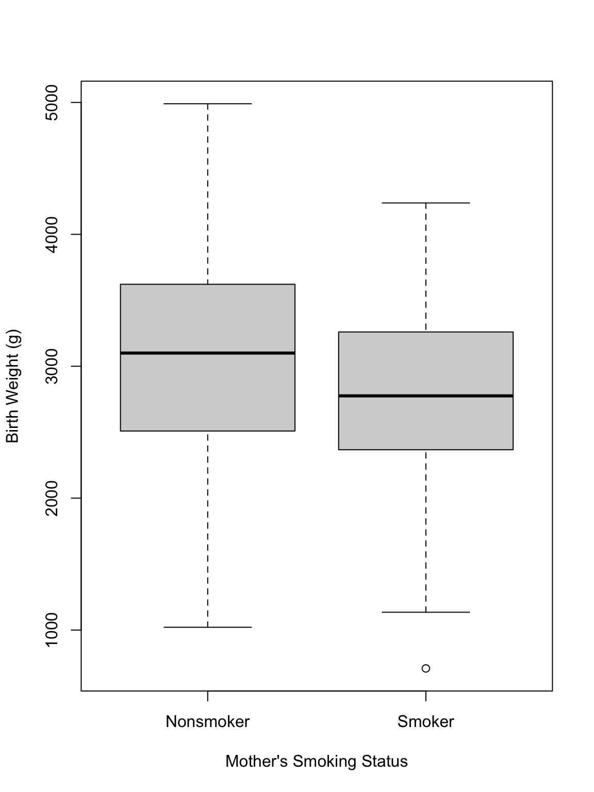
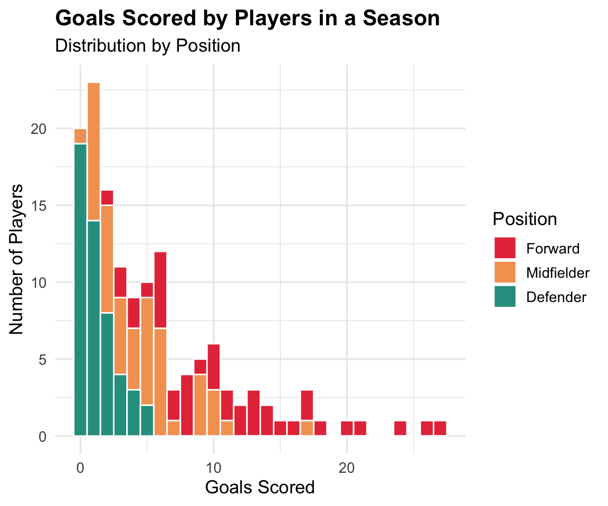
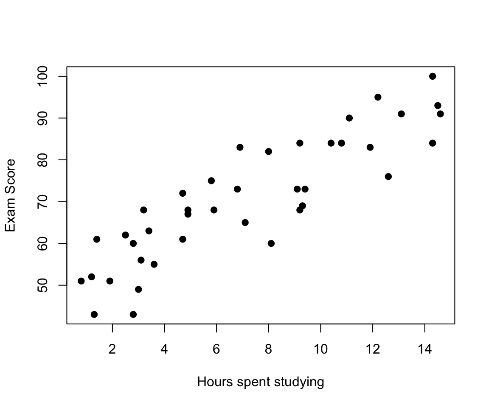
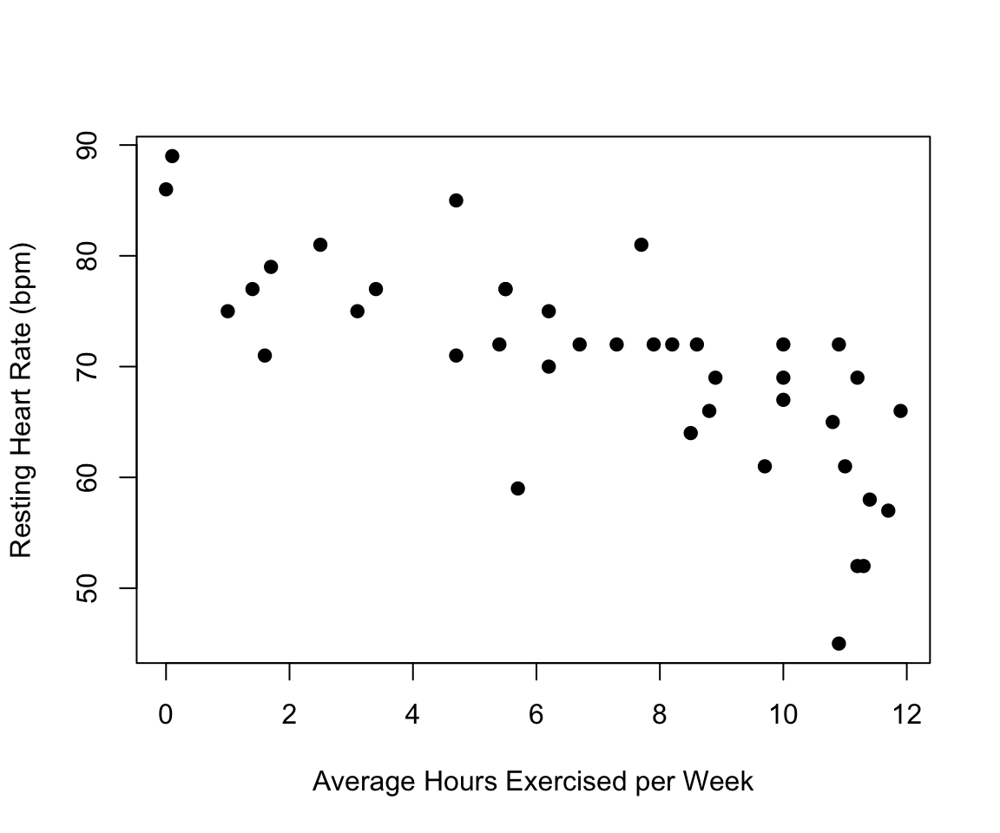
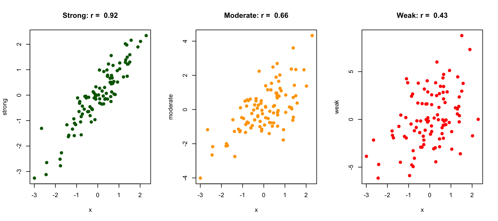
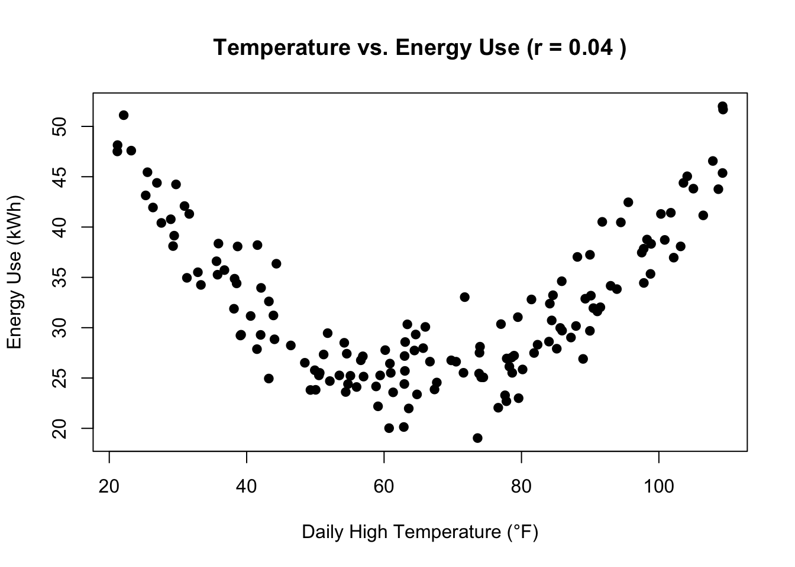
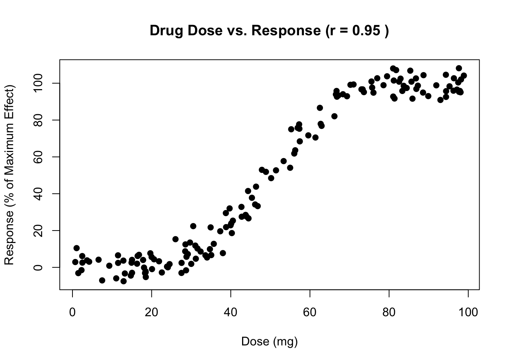
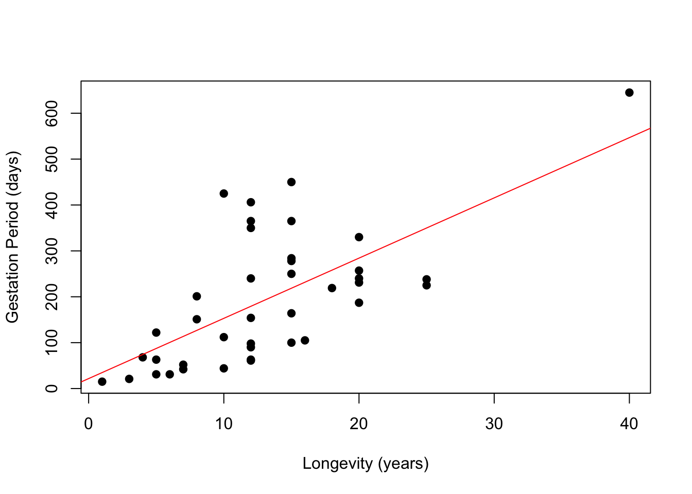

3 Examining Relationships
In Topic 1 we looked at ways to visualize data about a single variable. Now we want to learn ways to examine the relationship between two variables.
When we look at two variable we are interested in how one impacts the other. The response variable or dependent variable is the variable that gives the outcome of the study. The explanatory variable is the variable that claims to impact the response variable.
Example 3.1 Identify what is the explanatory and response variable in the following study questions:
- Does the amount of fertilizer affect how tall tomato plants grow?
- Does a car’s weight impact its mileage?
- Do people who sleep more have lower stress levels?
ImportantIdentifying Response and Explanatory
The roles aren’t always clear-cut: sometimes either variable could reasonably influence the other. In these cases, the study design is key in dictating which is the explanatory and which is the response variable.
3.1 Side-by-Side Boxplots (C \(\to\) Q)
If the explanatory variable is categorical and the response variable is quantitative, then one way to visualize the potential differences in distribution is by using side-by-side boxplots.
Example 3.2 Below is a dataset of 189 births from a 1986 study at Baystate Medical Center (in Massachusetts). What similarities and differences do you notice between babies born from smokers versus nonsmokers? What can you not tell by the boxplots that you might be interested in knowing about the data?
TipAnswer
From the bokplot it looks like the average baby weight is higher for nonsmoking mothers, however there is a large overlap in the IQR. The lower end of the boxplots look similar.
I would be interesting in learning how many participants were smokers/nonsmokers, which we cannot tell from the boxplots.
ImportantAssociation does not equal causation!
There may be a lurking variable which affects both the explanatory and response variable. This is why you should be careful about drawing conclusions just from statistical data.
Good study design should help eliminate potential lurking variables, however they are impossible to completely eliminate.
Example 3.3 What are potential lurking variables that could impact the study in Example Example 3.2?
Example 3.4 The above data is available for you to manipulate on StatCrunch here. Use the data to answer the following questions:
- How many mothers were smokers/nonsmokers?
- Is there a difference between the mother’s weight for smokers/nonsmokers?
- Is there a difference in the mother’s age for smokers/nonsmokers?
Another method of visualizing relationships between a categorical explanatory variable and a quantitative response variable is by using a stacked histogram.

Here we see that the histogram is colored by player position. From this visualization we can see that defenders typically don’t score much.
StatCrunch will let you do something similar, although it won’t let you exactly stack the bars like above. In StatCrunch you can choose Graph > Histogram. Then you can select your response variable and group by your explanatory variable. Scroll all the way down to the multiple graph section and select the same X and Y axis. You can also use the rows and columns per page to change how many histograms are viewed at once.
3.2 Contingency Tables (C \(\to\) C)
Example 3.5 A college polls 200 students to determine whether there is a relationship between a student’s class year (freshman, sophomore, junior, or senior) and whether or not they live off campus. This data is shown in the contingency table below.
- What percentage of freshmen live off campus?
- What percentage of seniors live off campus?
| Class Year | On Campus | Off Campus | Total |
|---|---|---|---|
| Freshman | 42 | 13 | 55 |
| Sophomore | 35 | 15 | 50 |
| Junior | 18 | 30 | 48 |
| Senior | 9 | 38 | 47 |
| Total | 104 | 96 | 200 |
TipAnswer
- \((13/55)\times 100 = 23.6 \%\)
- \((38/47)\times 100 = 80.9\%\)
We can convert a contingency table to percents. To do this we convert counts to percentages when restricting to a single explanatory variable. For example the row
| Class Year | On Campus | Off Campus | Total |
|---|---|---|---|
| Freshman | 42 | 13 | 55 |
becomes
| Class Year | On Campus | Off Campus | Total |
|---|---|---|---|
| Freshman | \((42/55)\times 100 = \mathbf{76.4\%}\) | \((13/55)\times 100 = \mathbf{23.6\%}\) | 100% |
In this case the rows should each add up to 100%. If our explanatory variables were in the columns, then we would make the columns sum to 100%.
Example 3.6 Using the data from the baby weight study above, create a contingency table on StatCrunch of the mother’s smoking status and race. Data
- For the mother’s at the hospital, does race impact whether or not they smoke? Use data from the table to support your answer.
- Does smoking impact whether the mother’s are diagnosed with hypertension?
3.3 Scatterplots (Q -> Q)
Example 3.7 We want to determine if more time spent studying improves the score received on an exam. The amount of time spent studying was self reported by students. Open the data in StatCrunch.
Since we want to know if study time improves exam score, the explanatory variable is study time and the response variable is exam score. We can plot these using a scatter plot (Graph > Scatter Plot). We should set the study time as the x variable and the exam score as the y variable.

We see from the scatter plot that hours spent studying is positively correlated with exam scores. This means that the more hours spent studying, the higher of an exam score a student tends to receive. Notice that the points appear to show a “fuzzy” line with a positive slope.
Average hours of exercise weekly is negatively correlated with resting heart rate. This means the more hours exercised, the lower the resting heart rate.

We use the words strong, moderate and weak to describe how linearly correlated the data is. Below is an example of each,

Above the value \(r\) is the correlation coefficient for the data. Don’t worry about the formula for computing r as we will use StatCrunch for this computation. See how to use it below,
Example 3.8 (Correlation Coefficient) Open this data in StatCrunch. Make a scatter plot with longevity as the explanatory variable and gestation period as the response variable. Then compute the correlation coefficient of the data.
The correlation coefficient \(r\) can measure the strength of the correlation, but only after we use the scatterplot to justify that it is linear! If our data is approximately linear, then the sign of the correlation coefficient tells us whether it is positive or negatively correlated. The magnitude of the correlation coefficient tells us the strength. There are a lot of different bench marks you will see for what \(r\) value is “moderate” versus “strong.” You should think of these benchmarks as a guideline and that they are context dependent.
Plenty of data is not linearly correlated! Let’s see some examples.


ImportantDon’t Over-Value \(r\)
The correlation coefficient should only be used as supporting evidence alongside the scatter plot. When a scatter plot looks linear, then \(r\) can tell us the strength and direction of that linearity. We cannot use \(r\) alone to justify linearity!!
3.4 Linear Regression
If we do feel a line is linear we can perform least-squares linear regression. This creates a line that best fits the data. We will not do this by hand, we will use StatCrunch. It is important to be able to interpret the StatCrunch output though.
Example 3.9 Open this data in StatCrunch. Perform the linear regression on the data. What is the equation for the line of best fit? Write a sentence to interpret the slope in the context of the explanatory and response variables.

TipAnswer
Under the table Parameter Estimates we want to look at the intercept and slope estimate values to generate the line of best fit.
Intercept: 21.71
Slope: 13.13
Recall that longevity is our response variable–this means for our line it is the input (x variable). Gestation will be the output (y variable). So our line has the form,
\[\text{gestation} = 13.13\times(\text{longevity}) + 21.71\]
The slope tells us that, on average, each year of longevity amounts to an additional 13.13 days of gestation. The intercept tells us for a animal with a longevity of 0 years, the gestation period is, on average, 21.71 days. This is an impossible scenario though, so it is outside of our domain of interest.
Example 3.10 Use the line of best fit computed in Example Example 3.9 to approximate the gestation period of a North American river otter, which has a typical lifespan of 12 years.
TipAnswer
Using our line, we estimate that the North American river otter will have a gestation period of \(13.13\times 12 + 21.71 = 179.27\) months.
According the the internet, the river otters have a gestation period of 285-375 days due to a process called delayed implantation. The more you know, eh?!
ImportantEstimation
You should avoid using linear regression to estimate values that fall outside of the range of your data. When we zoom in on functions they almost always look linear, but zooming out can reveal more complicated behavior. Just because a line fits the data you have, doesn’t mean it will still look linear when we “zoom out.”
For example, the line in Example Example 3.9 should not be used to approximate the gestation time of an ORca, which averages 90 years of life. Plugging this in gives an approximate gestation period of 1,203 days or ~40 months–much longer than their actual gestation period of 15-18 months.
Example 3.11 Data. Using the provided dataset, answer the following:
- Describe the relationship in words between the car’s weight and its miles per gallon. Use the weight as the explanatory variable.
- Compute the correlation coefficient.
- Use linear regression to write a line that estimates the car’s mpg from it weight.
- Estimate the mpg of a car that weighs 4250 lbs.